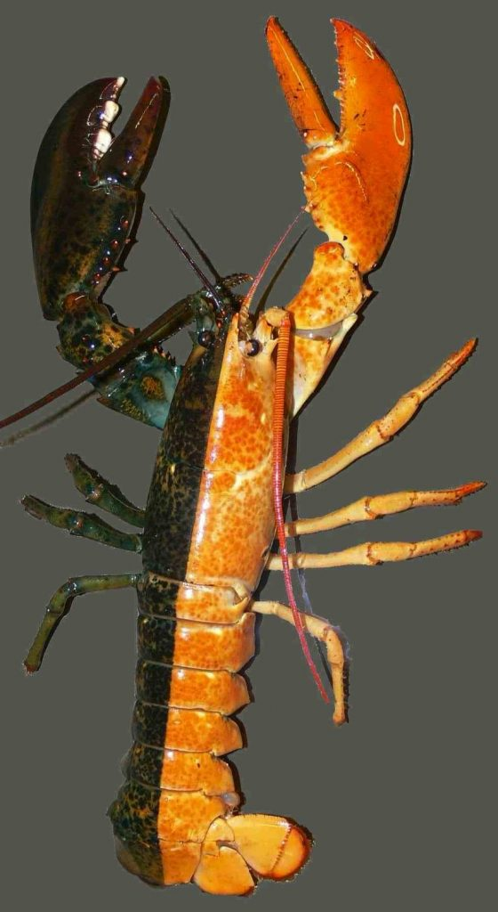
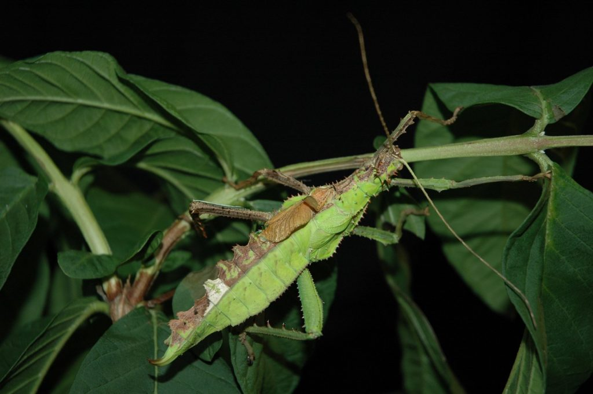
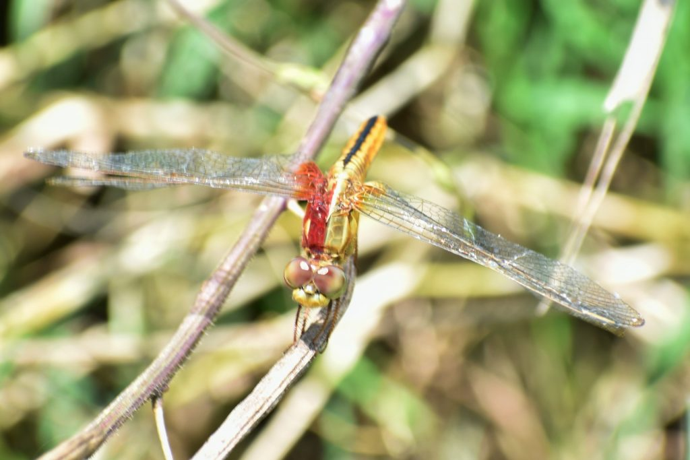
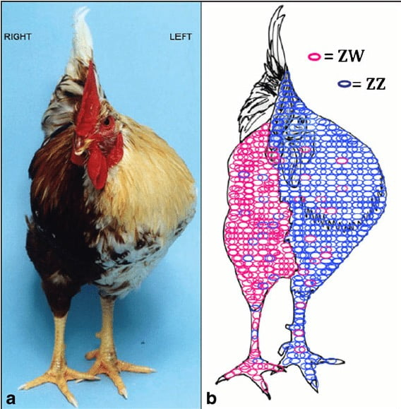

သက်ရှိ သတ္တဝါ တွေမှာ ကျားနဲ့ မ၊ အဖို အမ၊ အထီး အမ ဆိုပြီး ကွဲပြားကြပါတယ်။ ဒီလို ကွဲပြားသလိုပဲ ပြင်ပ သွင်ပြင် လက္ခဏာ တွေလဲ ကွဲပြားကြပါတယ်။ လူတယောက်ကို ပြင်ပက ကြည့်ရင် အထီးအမ သိနိုင် သလို တိရိစ္ဆာန် တွေရဲ့ ပြင်ပ လက္ခဏာ တွေဟာလဲ အထီး အမ ကွဲပြားကြပါတယ်။ ခွေး၊ ကြောင် တို့လို နို့တိုက် သတ္တဝါ တွေတင်မက ငှက်တွေ၊ ငါးတွေ၊ အင်းဆက် ပိုးမွှား တွေမှာလဲ အထီးအမ ကွဲပြားကြပါတယ်။
ဒီလို ကွဲပြားမှုဟာ အဖို နဲ့ အမ ကြားမှာ တိတိကျကျ ပြတ်ပြတ် သားသား ရှိပါတယ်။ ဒါ အဖို ဆိုရင် အမ မဟုတ်ဘူး၊ အမဆို အဖို မဟုတ်ဘူး ဆိုတာကို တိတိကျကျ ပြောနိုင် ကြပါတယ်။ ဒါပေမယ့် ဒီလို အဖို အမ အကြား အတိအကျ ပိုင်းခြားနိုင်မှုဟာ အမြဲ မှန်ကန်မှု မရှိဘူးလို့ သတ္တဗေဒ ပညာရှင် တွေက ပြောကြပါတယ်။
ဂရိခေတ်က နတ်ဖုရား တစ်ပါးမှာ အထီး အင်္ဂါရော အမ အင်္ဂါပါ ပါနေပါတယ်။ သူ့အမည်က Hermaphrodite ပါ။ ဒါ့ကြောင့် သတ္တဝါ တစ်ကောင်ထဲမှာ အထီး အင်္ဂါရော၊ အမ အင်္ဂါရော ပါတဲ့ အခြေအနေကို hermaphrodites (ဟာမာ ဖရိုဒိုက်) လို့ ခေါ်ပါတယ်။
သတ္တဝါ လောကက အချို့သော တိရိစ္ဆာန် မျိုးတွေမှာ အထီးအမ ရောထွေးနေတဲ့ ဟာမာဖရိုဒိုက် တွေ ဖြစ်နေ တတ်တယ်လို့ ဆိုပါတယ်။ ဥပမာ ပြင်ပ ပုံသဏ္ဍာန်က အထီး (သို့) အမ အဖြစ် ရှိနေပေမယ့် အတွင်းမှာတော့ ဖို ရော မ အင်္ဂါပါ နှစ်မျိုးလုံး ပါနေပါတယ်။ ဒီလို သဘာဝ ဖြစ်စဉ်ကို သတ္တဝါ မျိုးစိတ် အများအပြားမှာ တွေ့မြင် ကြရပါတယ်။

အထီးတခြမ်း အမတခြမ်း ဖြစ်နေတဲ့ Lobster ကျောက်ပုဇွန် (Source: Research Gate)ဒီ ဟာမာ ဖရိုဒိုက် နဲ့ ခပ်ဆင်ဆင် တူတဲ့ အခြား သဘာဝ တစ်ခုကိုတော့ သိတဲ့သူ သိပ်မရှိကြပါဘူး။ သူက ဟာမာ ဖရိုဒိုက် လောက်လဲ မတွေ့ရ တတ်ပါဘူး။ ဒါကတော့ gynandromorph (ဂိုင်နန်ဒရိုမော့ဖ်) လို့ ခေါ်တဲ့ သဘာဝပဲ ဖြစ်ပါတယ်။
ဒီ ဂိုင်နန်ဒရိုမော့ဖ် တွေကျတော့ ခန္ဓာကိုယ်ရဲ့ တခြမ်းက အထီး ဖြစ်နေပြီး ကျန်တဲ့ တခြမ်းက အမ ဖြစ်နေပါတယ်။ အထီးအမ ပြင်ပ ပုံပန်းကို အလယ် တည့်တည့်ကနေ ထက်ခြမ်း တိတိကျကျ ခြမ်းထားတာပါ။ ဒီ ဂိုင်နန်ဒရိုမော့ဖ် ဖြစ်စဉ်ကို ငှက်အချို့၊ ဂဏာန်း၊ ပုဇွန်တို့လို ရေနေ အခွံမာ ကောင်တွေနဲ့ လိပ်ပြာတွေမှာ တွေ့ရ တတ်ပါတယ်။

အထီးတခြမ်း အမတခြမ်း ကျိုင်းကောင် (Photo: Wikipedia)ဘာ့ကြောင့် အချို့ သတ္တဝါတွေမှာ အဖို တစ်ခြမ်း အမ တစ်ခြမ်း ဖြစ်ရတာလဲ ဆိုတာကို ဆင့်ကဲ ဖြစ်စဉ် သဘာဝ (evolutionary theory) ကို လေ့လာနေတဲ့ ပညာရှင် ဂျောရှ် ဂျာနား (Josh Jahner) က အခုလို ရှင်းပြပါတယ်။
“လိပ်ပြာတွေရဲ့ ကျားမ ခရိုမိုဆုမ်း က လူတွေရဲ့ ကျားမ ခရိုမိုဆုမ်း နဲ့ဆို ပြောင်းပြန် ဖြစ်နေပါတယ်။ လူမှာ အမျိုးသမီး တွေက XX ဆိုပြီး မျိုးတူ ခရိုမိုဆုမ်း နှစ်ခု ပါပြီး အမျိုးသား တွေကတော့ XY ဆိုပြီး မျိုးမတူတဲ့ ခရိုမိုဆုမ်း နှစ်ခု ပါနေပါတယ်။ ဒါပေမယ့် လိပ်ပြာတွေကျတော့ အဖိုတွေက တူညီတဲ့ ZZ ဆိုတဲ့ ခရိုမိုဆုမ်း နှစ်ခု ပါနေပြီး အမ တွေကတော့ ZW ဆိုပြီး မတူနဲ့ ခရိုမိုဆုမ်း နှစ်ခု ဖြစ်နေပါတယ်။”

ပုစင်းရင်ကွဲ ကောင်မှာလဲ အထီးတခြမ်း အမတခြမ်း မွေးလာနိုင်တယ် (Photo: Wikipedia)“လိပ်ပြာ အမရဲ့ မျိုးဥမှာ Z နဲ့ W ဆိုပြီး လိင်ခရိုမိုဆုမ်း ၂ ခု တစ်စုံ ပါပါတယ်။ ပုံမှန်ကတော့ ဒီ နှစ်ခုထဲက တစ်ခုကပဲ အဖိုရဲ့ Z ခရိုမိုဆုမ်းနဲ့ ပေါင်းပြီး အဖိုအမ ဖြစ်လာရမှာပါ။ ဒါပေမယ့် တခါတရံ ရှားရှားပါးပါး အမရဲ့ ခရိုမိုဆုမ်း နှစ်ခုလုံး ဖြစ်တဲ့ Z ရော W ရောက အဖိုရဲ့ Z ခရိုမိုဆုမ်း တွေနဲ့ ပေါင်းပြီး မျိုးအောင်သွားတာမျိုး ဖြစ်တတ်ပါတယ်။ ဒီအခါ ထွက်လာတဲ့ လိပ်ပြာလေးမှာ အဖို ရော အမရော နှစ်ခုလုံး ပါနေပါတော့တယ်။ ဒီအခါ တစ်ခြမ်းက အဖို ဖြစ်သွားပြီး နောက်တခြမ်းကတော့ အမ အဖြစ် ဖွံ့ဖြိုးသွားပါတယ်။”
ဒီလို အဖိုတခြမ်း အမတခြမ်း ဖြစ်တဲ့ အခြေအနေက ဘယ်လောက်ထိ ရှိတတ်သလဲ။ ၁၉၈၀ ခုနှစ်လွန် ကာလတုန်းက ပြုလုပ်ခဲ့တဲ့ သုတေသန တစ်ခုမှာ လိပ်ပြာ အကောင် ၃၀,၀၀၀ ကို မွေးမြူခဲ့ရာမှာ အထီးတစ်ခြမ်း အမတစ်ခြမ်း ဂိုင်နန်ဒရိုမော့ဖ် ငါးကောင်ပဲ ပါတယ်လို့ ဆိုပါတယ်။ တနည်းအားဖြင့် လိပ်ပြာ အကောင် ၆,၀၀၀ ခန့်မှာမှ တစ်ကောင်ပဲ ပါတဲ့ သဘောပါ။

ကြက်မှာလဲ အထီးတခြမ်း အမတခြမ်း ဖြစ်နိုင်ပါတယ်။ တခြမ်းက ZW ခရိုမိုဆုမ်း ကြောင့် ဖြစ်ပြီး နောက်တခြမ်းကတော့ ZZခရိုမိုဆုမ်းကြောင့် ဖြစ်ပါတယ်။ (Image source: Research Gate)ဒီ ဂိုင်နန်ဒရိုမော့ဖ် တွေဟာ မျိုးပွားနိုင်စွမ်းရော ရှိကြသလား။ အခုထိတော့ ဓါတ်ခွဲခန်းမှာ စမ်းသပ်မှုအရတော့ ဒီ နှစ်ခြမ်းစပ် လိပ်ပြာတွေဟာ ဥမဥ နိုင်ကြဘူးလို့ ဆိုပါတယ်။ ဒါ့ကြောင့် သိပ္ပံ ပညာရှင် တွေက ဒီ ဂိုင်နန်ဒရိုမော့ဖ် တွေ အနေနဲ့ လှပတဲ့ ပြင်ပ ပုံသဏ္ဍာန် ရှိကြပေမယ့် သူတို့ရဲ့ အလှကိုတော့ လက်ဆင့်ကမ်း ပေးနိုင်စွမ်း မရှိကြပါဘူးလို့ ဆိုပါတယ်။
Reference:
Going Through Life as Half She, Half He | National Geographic